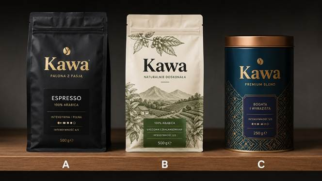
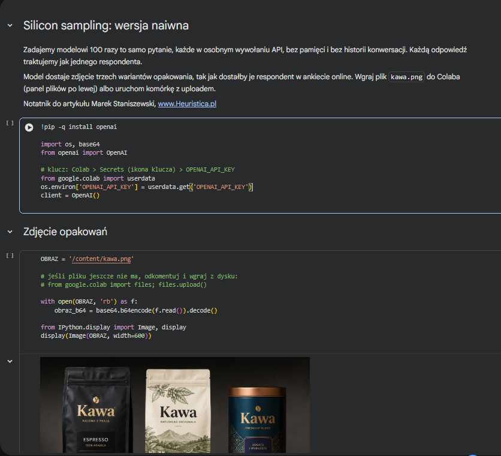
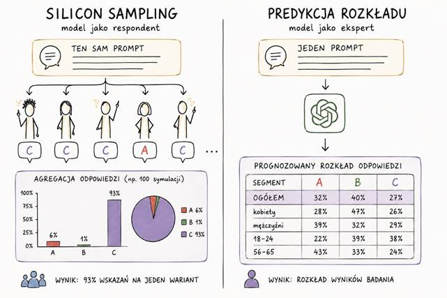
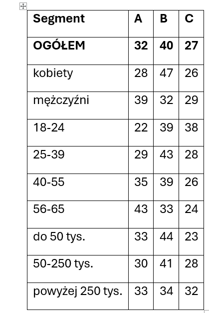

Jak robić badania marketingowe z AI, żeby to miało ręce i nogi – albo o tym, dlaczego LLM nie potrafią nie mieć jakiegoś zdania na temat
Powiedzmy, że pracujesz w dziale marketingu małego, lokalnego producenta kawy. Nie dysponujesz wielkimi budżetami na marketing, ani na badania rynkowe. I stoisz właśnie przed decyzją o wprowadzeniu na rynek nowego wariantu opakowania.
Konsumentami waszego produktu są osoby w szerokiej grupie docelowej: 18 do 65 lat, regularnie pijące kawę i samodzielnie decydujące o jej zakupie.
Ponieważ budżet jest mikroskopijny, postanawiasz zrobić szybką ankietę online na 100 respondentach i zebrać wstępne opinie. Okazuje się jednak, że twój mikroskopijny budżet właśnie został obcięty, a jednocześnie właściciel firmy coraz szybciej i głośniej przebiera nogami, żeby marketing podjął w końcu jakąś decyzję, bo trzeba zlecać produkcję itd.
(sytuacja może nieco przerysowana, ale zakładam, że domyślasz się już, o co chodzi...)

Chcesz się zatem szybko dowiedzieć, który wariant najlepiej trafiałby w gusta waszych konsumentów i w akcie desperacji decydujesz się wykorzystać do tego AI. Zwłaszcza że słyszysz ostatnio wiele opinii o tym, że modele w rodzaju ChatGPT są już całkiem niezłe w prognozowaniu wyników badań.
Tu jednak zaczynają się mnożyć wątpliwości. Bo w zasadzie jak to właściwie zrobić, żeby było to sensowne i wiarygodne? Warto się przez chwilę przyjrzeć tym wątpliwościom i możliwościom, bo temat jest względnie nowy, a plusów dodatnich i ujemnych jest tu sporo.
Metoda 1: Zapytanie w oknie konwersacji
Pierwsza rzecz, jaka może w tej sytuacji przyjść do głowy, to po prostu zapytać model o zdanie na zasadzie:
Jesteśmy lokalnym producentem kawy, nasz target to osoby w wieku 18 do 65 lat, regularnie pijące kawę mieloną i samodzielnie decydujące o jej zakupie. Zamierzamy wprowadzić na rynek nowe opakowanie. W załączeniu trzy warianty. Cena taka sama: 30 zł za 200 g. Który z nich i dlaczego powinniśmy wprowadzić, by osiągnąć jak największy sukces handlowy?
Prompt będzie pewnie dłuższy i zastosujesz w nim wszystkie triki prompt engineeringu (np. kontekst, rolę, zadanie, format). Odpowiedź będzie jednak miała najczęściej bardzo podobną formę:
Wybrałbym wariant B, ponieważ ma największy potencjał sprzedażowy. To opakowanie jest najbardziej uniwersalne, naturalne i wiarygodne dla szerokiej grupy 18 do 65. Dobrze pasuje też do pozycjonowania lokalnego producenta. A: mocne i profesjonalne, ale zbyt espresso-specjalistyczne. B: najlepszy balans, jakość plus naturalność plus dostępność. C: atrakcyjne premium, ale może wydawać się zbyt drogie lub prezentowe.
Brzmi niby-konkretnie. Pod tego rodzaju odpowiedzią kryje się jednak kilka min. A będą nimi głownie:
1. To nie jest prognoza tylko rekomendacja.
Zapytałeś tu eksperta w postaci LLM, a nie rynek. Model odpowiedział tak, jak odpowiedziałby zewnętrzny konsultant. A ty potrzebujesz wiedzieć coś więcej – np. nie tylko "który jest najlepszy" ale też "ilu ludzi go wybierze i o ile więcej niż wariant konkurencyjny".
2. To jedno losowanie, a nie wiarygodny wynik.
Zadając to samo pytanie jutro, w nowym oknie chatu albo innym chatbocie możesz dostać wariant C. I nie masz pojęcia, czy odpowiedź "B" jest stabilnym przekonaniem modelu, czy zwykłym przypadkiem. Bez powtórzeń nie odróżnisz tu sygnału od szumu.
3. Efekt kompromisu.
Trzy warianty ustawione jako mocny, zrównoważony i premium prawdopodobnie często prowadzić będą do wyboru środkowego. To pewien bias decyzyjny znany u ludzi, ale model odtwarzać go będzie z podręczników jakie przemielił w materiale treningowym. Gdybyś zamienił kolejność albo opisy, wskazanie mogłoby pójść w zupełnie inną stronę.
4. Model ocenia projekt, a nie reakcję na projekt.
To dwie różne rzeczy. LLM wypowiada się tu trochę w konwencji krytyki designu, którą wchłonął z tysięcy artykułów. Nie jest to jednak konwencja zachowania zakupowego, którego w danych treningowych po prostu nie ma.
Metoda 2: Silicon sampling
Biorąc pod uwagę powyższe wątpliwości postanawiasz więc zbadać rzecz bardziej metodycznie. A gdyby tak każdą odpowiedź modelu potraktować jako odpowiedź pojedynczego konsumenta - respondenta?
Ponieważ rozważałeś próbę stu osób, to może należałoby teraz zadać to samo pytanie sto razy, każde w nowym oknie konwersacji? A potem wkleić wyniki do Excela i dopiero zrobić analizę?
(na marginesie: taka metoda ma nawet swoją nazwę i całkiem już sporą literaturę. To „silicon sampling", termin wprowadzony przez zespół Argyle'a w 2023 roku razem z pojęciem algorithmic fidelity, czyli miary tego, na ile symulowany respondent odtwarza rzeczywistą grupę [7])
Informatyk zakładowy, który akurat pracuje w tym samym pomieszczeniu, słysząc twoje głośne myślenie, podchwytuje temat. Mówi, że to nawet fajna metoda, ale trzeba wyłączyć pamięć konwersacji i najlepiej zrobić to przez API. I faktycznie ma rację. Bo jeśli sto pytań zadamy w jednym oknie, to każda kolejna odpowiedź widzi poprzednie i wpływa na kolejne bo model np. zaczyna dbać o spójność. Przestaje symulować stu konsumentów, a zaczyna symulować jedną osobę, która sto razy coś tłumaczy.
Jeśli z kolei zadasz je w stu nowo otwartych oknach, ale z włączoną przy tym pamięcią asystenta, dzieje się to samo. Tyle, że w sposób mniej widoczny. API bez historii to więc jedyny sposób, żeby wywołania były faktycznie niezależne.
Informatyk zauważa przy okazji najważniejszą minę: model może przecież sto razy powtarzać… tą samą odpowiedź. I jest to faktycznie poważny problem. Bo modele typu instruction-tuned - czyli te, z których korzystamy na co dzień, nie próbkują z rozkładu, tylko zapadają się (distributional collapse) do jednej odpowiedzi [5]. Sto wywołań daje więc nie tyle stu respondentów, co jednego respondenta powtórzonego sto razy.
Żeby to udowodnić tworzycie szybko następujący skrypt:

[LINK DO NOTATNIKA COLAB: silicon sampling, wersja naiwna – zob. w przypisach]
Przykładowe odpowiedzi modelu wyglądają wtedy tak:
respondent 1: Wybrałbym wariant A, ponieważ lubię intensywną i pełną kawę typu espresso.
respondent 2: Wybrałbym wariant A, ponieważ lubię intensywną i pełną kawę do espresso.
respondent 3: Wybrałbym wariant A, ponieważ preferuję intensywną i pełną kawę, a ten wariant ma wysoką intensywność oraz 100% arabikę.
respondent 4: Wybrałbym wariant A, ponieważ lubię intensywną i pełną smakowo kawę typu espresso.
respondent 5: Wybrałbym A, bo lubię kawę intensywną i pełną w smaku.
respondent 6: Wybrałbym A, ponieważ lubię kawę o intensywnym i pełnym smaku espresso.
respondent 7: Wybrałbym wariant A, ponieważ lubię intensywną i pełną kawę do espresso.
respondent 8: Wybrałbym wariant A, ponieważ lubię intensywną i pełną w smaku kawę espresso.
respondent 9: Wybrałbym wariant A, ponieważ lubię intensywną i pełną kawę typu espresso.
respondent 10: Wybrałbym wariant A, ponieważ lubię kawy intensywne i pełne w smaku, a ta ma wysoką intensywność.
Na sto wywołań tym razem sto razy padło na wariant A. Przytoczone wyżej dziesięć kolejnych odpowiedzi (wszystkie 100 sa bardzo podobne) różni się wyłącznie szykiem zdania i tym, czy model napisał „intensywną i pełną" czy „intensywną i pełną w smaku".
Warto się na chwilę zatrzymać nad tym, co to właściwie oznacza. Bo nie jest tak, że model wybrał wariant A i uparcie przy nim stoi dlatego, że ma ku temu jakieś powody. Nie jest też tak, że stu wirtualnych konsumentów przypadkiem zgodziło się co do jednego.
Model w architekturze transformera po prostu sto razy wygenerował najbardziej prawdopodobną kontynuację tekstu. To jest dokładnie ta sama operacja co dopisanie słowa „dobry” po słowie „dzień” albo słowa „świąt” po słowie „wesołych” - jako najbardziej oczywistej kontynuacji tekstu – kolejnych najbardziej prawdopodobnych tokenów.
Warto tu też zwrócić uwagę na coś jeszcze. Ta jedna odpowiedź, jaką otrzymujemy sto razy, jest zupełnie inna niż odpowiedź z metody pierwszej. Tam model wskazał przecież poprzednio wariant B. Tu zaś konsekwentnie wskazuje A. Zmieniło się jedynie to, w jakiej roli go o to zapytaliśmy.
Patrząc na te wyniki w tym momencie obaj dochodzicie do wniosku, że w istocie nie ma to większej wartości.
Czy nie byłoby zatem lepiej, gdyby model przy każdym wywołaniu zmieniał się w innego respondenta, zgodnie z rozkładem w próbie?
Informatyk zakładowy podłapuje pomysł i pisze szybko nowy skrypt, uwzględniający teraz kontrolę kwotową. Model będzie więc symulował różnych respondentów na zasadzie:
Struktura próby, N równe 100:
Płeć, z lekką przewagą kobiet w zakupach domowych: kobiety 55, mężczyźni 45.
Wiek: 18 do 24 lata 10 osób, 25 do 39 lat 35 osób, 40 do 55 lat 35 osób, 56 do 65 lat 20 osób.
Miejsce zamieszkania: wieś i miasta do 50 tysięcy 40 osób, miasta od 50 do 250 tysięcy 35 osób, miasta powyżej 250 tysięcy 25 osób.
[LINK DO NOTATNIKA COLAB: silicon sampling z kontrolą kwotową - zob. w przypisach]
Po uruchomieniu kodu otrzymujecie zupełnie inne wyniki. Mają one postać jak poniżej (wybrane odpowiedzi):
kobieta; 40-55; miasto od 50 do 250 tys.; C – Wybrałabym opakowanie C, bo najbardziej podoba mi się elegancka puszka i kojarzy mi się z lepszą jakością.
kobieta; 25-39; miasto powyżej 250 tys.; C – Podoba mi się eleganckie opakowanie w puszce, które można później wykorzystać na coś innego w kuchni.
mężczyzna; 18-24; miasto od 50 do 250 tys.; C – Wybrałbym ten wariant, bo podoba mi się eleganckie, metalowe opakowanie i lubię kawę o wyrazistym, mocnym smaku.
kobieta; 25-39; wieś lub miasto do 50 tys.; C – Wybrałabym ten wariant, bo lubię kawę o wyrazistym smaku i eleganckie, praktyczne opakowania.
mężczyzna; 40-55; miasto od 50 do 250 tys.; C – wybrałbym ten wariant, bo podoba mi się elegancka puszka, w której kawa dłużej zachowa świeżość.
kobieta; 25-39; wieś lub miasto do 50 tys.; A – Wybieram A, bo lubię intensywną i pełną w smaku kawę do espresso.
kobieta; 25-39; miasto powyżej 250 tys.; C – Wybrałabym ten wariant, bo podoba mi się elegancka puszka i lubię wyrazistą kawę.
mężczyzna; 25-39; wieś lub miasto do 50 tys.; C – bo przekonuje mnie elegancka puszka i informacja, że kawa jest bogata i wyrazista, a lubię mocne smaki.
Wszystkie te odpowiedzi sprowadzają się do tego, że teraz 93 procent respondentów opowiedziało się za wariantem C (!). (Wariant C – 93 osób, wariant A – 6 respondentów, wariant B – 1 osoba)
Nadanie respondentom cech demograficznych nie stworzyło więc zróżnicowania. Przesunęło jedynie punkt, w którym model się zapada. Bez person uzyskaliśmy sto razy opcję A, z personami mamy dziewięćdziesiąt trzy razy wariant C.
Persony w zasadzie nie różnicują odpowiedzi. Kobiety wybrały C w 93 procentach. Mężczyźni podobnie - w 93 procentach. W poszczególnych grupach wiekowych mamy zaś100, 94, 91 i 90 procent - różnice mieszczące się w granicach zwykłego szumu.
Jedyna wyraźna różnica pojawiła się przy miejscu zamieszkania. W obu kategoriach miejskich wariant C wybrało 100 procent respondentów. Wszystkie odstępstwa (7) pochodzą z segmentu „wieś i małe miasta". Model nie różnicuje więc płynnie, tylko stosuje jakieś ukryte wnioskowanie na zasadzie: „zakładam, że mieszkaniec małej miejscowości może nie sięgnąć po ozdobną puszkę premium”.
I jeszcze jedna rzecz, jaką warto podkreślić. Unikalnych odpowiedzi było 96 na 100, co na pierwszy rzut oka wygląda na sensowną różnorodność. Tyle tylko że słowo „elegancki" padło w 92 procentach z nich, określenie „podoba mi się" w 85, a słowo „puszka" w 64. Czyli w pewnym sensie niby sto różnych zdań, ale wciąż ta sama, nieco inaczej wyrażana myśl. Ciekawe, że np. o „naturalności”, czyli o całej propozycji dającej się łatwo wyczytać z wariantu B ani razu nikt nie wspomniał.
Zanim więc ucieszą nas tu ładne różnice między segmentami, to warto przytoczyć pewne ustalenie. Otóż zespół z Columbia Business School przeprowadził najostrzejszy jak dotychczas test takiej metody. Uwzględniał on realnych ludzi, którzy odpowiedzieli wcześniej na ponad 500 pytań o sobie. Na tej podstawie zbudowano cyfrowe bliźniaki (digital twins) i sprawdzono, czy bliźniak przewiduje odpowiedzi swojego pierwowzoru. Korelacja wyniosła 0,20. Bliźniak zbudowany na pięciuset odpowiedziach okazywał się jedynie minimalnie lepszy niż model, który o danej osobie nic nie wiedział [3].
Czyli ujmując to inaczej - różnice między segmentami, które zobaczymy w wynikach, mogą być w dużej mierze odtwarzaniem stereotypu, a nie pomiarem. Model „wie”, co "powinni" myśleć np. czterdziestolatkowie z małych miasteczek i dokładnie to nam opowiada.
(o tym, kiedy syntetyczne persony mają sens, a kiedy stają się potwierdzaniem własnych założeń, pisałem w tym artykule: Jak korzystać z syntetycznych person AI w marketingu)
Metoda 3: predykcja rozkładu
Może więc zastosować inne podejście i od razu poprosić model o to, by podał taki raport, jaki powstałby po analizie surowych wyników zrobiony przez agencję badawczą?
W literaturze metoda ta nazywana jest „direct distributional prediction”, co po polsku można by chyba też oddać jako „elicytacja rozkładu”. Różnica wobec metody drugiej jest tu zasadnicza. Poprzednio LLM miał być respondentem. Teraz będzie ekspertem, którego pytamy o to by spróbował przed badaniami zaprognozować spodziewany rozkład odpowiedzi.
Pozornie brzmi to jak krok wstecz, bo wygląda może nieco mniej metodycznie. W rzeczywistości jest odwrotnie. Ten sam zespół, który pokazał, że modele nie potrafią próbkować z rozkładu, sprawdził też, co się stanie, gdy poprosi się je o opisanie tego rozkładu w jednym wywołaniu. Błąd względem danych ludzkich spadał wtedy o ponad połowę w porównaniu z agregacją danych ze stu person [5].

Rys. Odmienne strategie pytania modelu o wynik badania: symulacja N respondentów kontra jedno pytanie o rozkład.
Bo model naprawdę dużo wie – tyle, że często nie potrafi tego odegrać. Lepiej więc zapytać go wprost o samą zawartą w nim wiedzę niż kazać mu w coś grać.
Piszecie zatem nowy prompt i nowy skrypt. Model dostaje teraz opis struktury próby, zdjęcie opakowań i treść pytania, a jego zadaniem jest podać procentowy rozkład wyborów – w całej próbie i w podgrupach. Ponieważ jedno wywołanie to nadal jedno losowanie, to na wszelki wypadek powtarzacie eksperymet pięć razy.
Prompt ma postać jak niżej:
MODEL = 'gpt-4.1'POWTORZENIA = 5SEGMENTY = ['OGÓŁEM', 'kobiety', 'mężczyźni', '18-24', '25-39', '40-55', '56-65', 'do 50 tys.', '50-250 tys.', 'powyżej 250 tys.']PROMPT = '''Jesteś doświadczonym badaczem rynku. Twoim zadaniem jest oszacowanie wyników badania, którego wyników nie znasz.OPIS BADANIABadanie opakowań kawy mielonej, Polska, próba N = 100, konsumenci regularnie pijący kawę mielonąi samodzielnie decydujący o jej zakupie.
Struktura próby:
Płeć: kobiety 55, mężczyźni 45
Wiek: 18-24 lata 10 osób, 25-39 lat 35 osób, 40-55 lat 35 osób, 56-65 lat 20 osób
Miejsce zamieszkania: wieś i miasta do 50 tys. 40 osób, miasta 50-250 tys. 35 osób,
miasta powyżej 250 tys. 25 osób
PYTANIE ZADANE RESPONDENTOMNa zdjęciu widzisz trzy warianty opakowania tej samej kawy mielonej, oznaczone A, B i C.
Cena każdego jest taka sama: 30 zł za 200 g. Który z nich kupiłbyś dla siebie?
Respondent wybierał dokładnie jeden wariant. Nie było opcji „nie wiem”.
TWOJE ZADANIEOszacuj procentowy rozkład wyborów w całej próbie oraz w podanych podgrupach.
Szacuj to, co realnie wybraliby polscy konsumenci, a nie to, który wariant jest najlepiej zaprojektowany.
W każdym wierszu trzy wartości muszą sumować się do 100. Podawaj liczby całkowite.
Odpowiedz wyłącznie tablicą JSON, bez komentarza i bez bloków kodu, w formacie:
[{"segment": "OGÓŁEM", "A": 0, "B": 0, "C": 0}, ...]Segmenty w dokładnie tej kolejności:
OGÓŁEM, kobiety, mężczyźni, 18-24, 25-39, 40-55, 56-65, do 50 tys., 50-250 tys., powyżej 250 tys.'''
[LINK DO NOTATNIKA COLAB: elicytacja rozkładu - zob. w przypisach]
Wynik tym razem wygląda tak:

Pierwsza dobra wiadomość: rozkład wreszcie zaczyna przypominać... rozkład. Zamiast 93 procent na jednym wariancie mamy 32 do 40 do 27 czyli proporcje, które przypominać już mogą wynik prawdziwego badania. I to jest też realna przewaga takiego podejścia nad metodą poprzednią.
Druga dobra wiadomość jest taka, że na poziomie ogólnym te liczby są dosyć stabilne (w pięciu niezależnych przebiegach wariant B wygrywał za każdym razem, a rozrzut wyników wynosił od 3 do 7 punktów procentowych). Przy realnej próbie stu osób błąd statystyczny wynosiłby około 10 punktów, więc model jest tu mniej chwiejny niż samo badanie, które udaje.
No ale jak to w życiu bywa jest tu również „bad news” - bo w segmentach te liczby nie są już stabilne:-/
Rozrzut między przebiegami wynosi w podgrupach średnio 11 punktów procentowych, czyli dwa razy więcej niż na poziomie ogólnym. Praktycznie oznacza to, że w pięciu z dziewięciu segmentów zwycięski wariant zmieniał się w zależności od przebiegu. Wśród mężczyzn raz wygrywało C, cztery razy A. W grupie 18-24 trzy razy C i dwa razy B. W dużych miastach trzy razy wariant B i dwa razy A.
Gdybyśmy więc uruchomili załączony skrypt tylko raz i zbudowali na tym rekomendację dla poszczególnych grup, otrzymalibyśmy wnioski zależne właściwie od tego… którego dnia naciskamy guzik.
Pojawia się tu jednak pewna ciekawa rzecz, która jest w miarę stabilna. Otóż wybór wariantu A rośnie równo z wiekiem: 22, 29, 35, 43 procent. Powtarza się to we wszystkich pięciu przebiegach. Podobnie płeć: kobiety częściej wybierają B, mężczyźni A (różnica 15 punktów).
Model jest więc najbardziej pewny dokładnie tam, gdzie sam stereotyp może być najczytelniejszy. Kobiety (zgodnie z volumenem skojarzonych tokenów w danych treningach) wolą więc wg LLM-a to, co naturalne i łagodne, a starsi wolą mocne espresso w czarnym opakowaniu.
Czas jednak skończyć te dywagacje i wrócić do właściciela z rekomendacją...
Zanim jednak wejdziecie do jego gabinetu, warto jeszcze szybko zerknąć na jedno zestawienie. Bo zadawaliśmy modelowi w gruncie rzeczy to samo pytanie, o to samo zdjęcie, przy tej samej cenie. Cztery razy, w czterech różnych konfiguracjach:
pytanie w oknie czatu: wariant B
sto wywołań bez person: wariant A, 100 procent
sto wywołań z personami: wariant C, 93 procent
predykcja rozkładu: wariant B, 40 procent
Cztery różne konfiguracje i mamy trzech różnych zwycięzców. Trzy różne decyzje produkcyjne i w dodatku każda na pozór dobrze uzasadniona….
Symulacja coś tam więc mierzy – ale w dużym stopniu mierzy ona bardziej architekturę badanego promptu niż preferencje rynku.
Tu więc pojawia pytanie zasadnicze: na ile możecie tym wynikom zaufać?
Popatrzmy zatem, co mówią na ten temat różne badania.
A jest na co patrzeć, bo pole to jest już dosyć obszerne i jednocześnie ma dwie pozornie sprzeczne linie wyników (sprzeczność znika, gdy rozróżnimy, o jakim poziomie szczegółowości mówimy).
Na poziomie kierunków i rankingów AI okazuje się działać zaskakująco dobrze.
Najmocniejszy dowód to praca opublikowana w Nature w 2026 roku. Autorzy zebrali tu 70 preregistrowanych eksperymentów, 469 efektów i ponad 119 tysięcy uczestników, po czym kazali modelowi przewidzieć wyniki. Korelacja z rzeczywistością wyniosła 0,85, a dla badań nieopublikowanych przed cutoffem modelu (datą odcięcia danych treningowych) nawet 0,90 [1].
Kluczowy jest jednak punkt odniesienia, który autorzy podali: model wypadł mniej więcej tak samo dobrze (ale nie lepiej) jak grupa doświadczonych ekspertów proszonych o obstawianie wyniku. I przy okazji systematycznie zawyżał wielkość efektów [1].
Na poziomie pojedynczych osób AI nie działa.
To wspomniane wyżej 0,20 z badania cyfrowych bliźniaków [3] potwierdzone niezależnym benchmarkiem, w którym na dwóch dużych zbiorach danych surveyowych żaden z testowanych modeli nie pobił nawet prostego modelu statystycznego. Przy wartościach zaś międzykulturowych każdy wypadł wyraźnie słabiej [9].
Rozrzut odpowiedzi jest fałszywy.
Klasyczne już ustalenie z Political Analysis pokazuje, że średnie generowane przez modele bywają zbliżone do prawdziwych, ale zróżnicowanie odpowiedzi jest znacznie mniejsze niż u ludzi [2]. W praktyce oznacza to, że symulowana grupa jest bardziej zgodna, bardziej jednomyślna i pozornie bardziej „sterylna" niż jakakolwiek prawdziwa grupa konsumentów. Wyniki wyglądają więc lepiej i bardziej jednoznacznie niż powinny.
Model dopowiada sobie to, czego ty mu nie powiedziałeś.
Ten problem uderza dokładnie w nasz scenariusz z opakowaniem. Gdy w symulacji zmieniamy jeden parametr (np. cenę albo wariant projektu), model po cichu zamienia też resztę – zakłada sobie w wewnętrznym rozumowaniu inną konkurencję, inny kanał sprzedaży, inny kontekst zakupowy. Efekt bywa taki, że różnice między wariantami się zacierają albo wyolbrzymiają w sposób trudny do przewidzenia [4].
Nawet tam, gdzie działa, działa nierówno.
Badacze z Harvard Business School sprawdzili, jak modele szacują gotowość do zapłacenia za produkty i cechy produktów. Czasem wyniki były porównywalne z badaniami na ludziach, a czasem błędne, w tym błędne co do samego kierunku [6].
Konsensus praktyczny jest więc wobec tego dość ostrożny. Autorzy przeglądu w Psychology & Marketing rekomendują naszą drugą metodę - ‘silicon sampling” ale raczej do pretestów i badań pilotażowych. Czyli np. do sprawdzenia, czy pytania w ankiecie są zrozumiałe. Do tej więc części procesu, w której badacz i tak zgaduje – tyle, że gorzej [8].
Co wychodzi z eksperymentów własnych ?
Prytoczone badania prowadzone są niemal wyłącznie na materiale anglojęzycznym i amerykańskim. Autorzy jednego z nich zaznaczają zresztą wprost, że modele prawdopodobnie lepiej emulują opinię publiczną Stanów Zjednoczonych niż innych krajów, bo danych treningowych w językach innych niż angielski jest po prostu nieporównanie mniej [2]. Dlatego od pewnego czasu prowadzę własne eksperymenty tego typu.
Pierwszy z nich opisałem na łamach „Marketingu przy Kawie" w listopadzie ubiegłego roku. Zrobiliśmy go razem z Dariuszem Chołostem z agencji KB Pretendent na podstawie realnego badania na dwóch rynkach Ameryki Południowej. Trzy modele – Claude, DeepSeek i ChatGPT – dostały kwestionariusz badania B2B na tydzień przed startem wywiadów w Brazylii i Kolumbii, czyli zanim jakiekolwiek dane w ogóle powstały. Miały przewidzieć wyniki [10].
Wypadły zaskakująco dobrze. Najlepszy model osiągnął 80 do 85 procent trafności. Warto jednak zaznaczyć, że liczba ta dotyczy: trafności kierunkowej - tego, czy model prawidłowo ustawił hierarchię. Bo modele bezbłędnie wskazały, że przy zakupie liczy się najpierw cena, potem logistyka, a certyfikaty dopiero na końcu. Że głównym dostawcą jest Chile, że bariery to transport, koszty, cła itp.
Gdy jednak przyjrzymy się konkretnym liczbom, obraz robi się nieco inny. Rozpoznawalność Polski jako dostawcy modele oszacowały na 10 do 18 procent, a realnie wyszło od 1 do 6. Zasięg kampanii w Brazylii na 15 do 25 procent, a wyszło 4. Import z UE do Kolumbii na 35 do 55 procent, a wyszło 78.
Drugą serię eksperymentów prowadzę obecnie na polskich danych - wynikach kilku badań, które nigdy nie zostały opublikowane – więc model nie mógł ich znać. I tu pojawia się coś, co wydaje się chyba najciekawszym elementem tej układanki.
Model bardzo dobrze porządkuje, a bardzo źle mierzy.
Przykładowo - korelacja przewidywanej i rzeczywistej kolejności stwierdzeń sięga 0,9. Jednocześnie w konkretnych liczbach model mieści się w granicach błędu statystycznego badania w mniej więcej jednym przypadku na dwanaście.
Model systematycznie zawyża deklaracje pozytywne.
I to o średnio kilka punktów procentowych, niemal zawsze też w tę samą stronę. Pojawia się więc dokładnie ten sam kierunek obciążenia, który raportuje Nature [1] tylko na zupełnie innym typie danych.
Model nie potrafi odwzorować obojętności (sic!)
W bateriach typu „zgadzam się – nie zgadzam się" duża część ludzi często wybiera odpowiedź środkową, bo dany temat po prostu ich nie obchodzi – jest im zupełnie obojętny. Model nie robi tak nigdy. We wszystkich pomiarach, jakie robiłem eksperymentalnie LLM nie doszacował udziału odpowiedzi neutralnych. I nie chodzi tu o kilka, ale o kilkanaście punktów procentowych.
Mechanizm jest przy tym prostszy, niż sugerować mogłaby cała tocząca się dyskusja o halucynacjach. Respondent w realnej ankiecie ma po prostu prawo NIE MIEĆ zdania - i regularnie z tego prawa korzysta. Model z kolei zawsze jakieś zdanie wygeneruje, bo obojętność nie jest stanem, który jego architektura w ogóle reprezentuje. Poza samą architekturą jest tu również Instruction tuning – ucznie modelu wykonywania poleceń czy „alignment” - „dostrajanie wartości" by model zachowywał się grzecznie i bezpiecznie. Model wytresowany w odpowiadaniu, w pewnym sensie musi więc zawsze „mieć jakieś zdanie” a nie np. wciąż odpowiadać: „no nie wiem… trochę tak a trochę tak… w zasadzie to mi to obojętne…”).
Więc np. te brakujące odpowiedzi neutralne lądują w większości po stronie pozytywnej – i stąd bierze się tego rodzaju zawyżanie.
Uśrednianie nie pomaga.
Powtórzenie symulacji trzy razy i wzięcie średniej nie poprawia trafności ani o punkt. Problem nie leży bowiem w losowości ale w systematycznym przesunięciu. Żadna liczba symulowanych respondentów raczej więc tego nie naprawi.
Próbując zestawiać wnioski z wszystkich dotychczasowych eksperymentów, jakie robiłem pokuszę się tu nawet o sformułowanie pewnego twierdzenia, że:
Model systematycznie przecenia to, jak bardzo ludzie coś zauważają i jak bardzo im na czymś zależy. Jednak nieuwaga, niepamięć i obojętność to chyba stany, o których niewiele się pisze w internecie i nie trafiają do danych treningowych – więc model nie ma jak i skąd się ich nauczyć...
Do brzegu, do brzegu! - wracamy do naszego opakowania
Co zatem z tego wszystkiego wynika dla naszej decyzji o wariantach A, B i C? I generalnie w badaniach marketingowych których wyniki chcemy prognozować w LLM tudzież symulować odpowiedzi respondentów.
Sensownie
np. zawężać listę pomysłów – np. z dwunastu do trzech przed prawdziwym badaniem. Niby banał, ale sprawdzić, czy pytania w ankiecie są zrozumiałe. Postawić hipotezy, które potem możemy zweryfikować na ludziach. I robić to raczej w sytuacji, kiedy alternatywą nie tyle jest gorsze badanie, co brak jakiegokolwiek badania, a decyzję i tak trzeba podjąć w piątek do 17.00.
Ryzykownie
decyzje progowe, w których liczy się poziom, a nie ranking, bo wielkość efektu będzie tu zwykle zawyżona. I uwaga na wszystko, co dotyczy segmentów. Bo jak widzieliśmy wyżej, w pięciu z dziewięciu grup zwycięski wariant zmieniał się przy każdym kolejnym uruchomieniu tego samego skryptu. Wniosek w rodzaju „młodzi wolą C, a starsi A" jest więc w tym przypadku nie tyle wynikiem, co skutkiem tego, kiedy akurat nacisnęliśmy guzik.
Praktyczna granica użyteczności przebiega więc tu dokładnie pomiędzy dwoma pytaniami.
"Który wariant wypadnie lepiej" - to pytanie, na które model odpowiednio zapromptowany ma szansę odpowiedzieć w miarę dobrze i sensownie.
"Ile procent konsumentów go wybierze" - to pytanie, na które odpowie zawsze źle i zawsze zbyt hurra-optymistycznie.
Jest jeszcze jeden test, który bardzo polecam jeśli chcesz użyć tej metody na serio. I kosztuje niewiele – powiedzmy dodatkowe 15 minut roboty. Zanim uwierzysz, że AI przewidziało wynik badania, poproś trzy doświadczone osoby ze swojego zespołu, żeby wypełniły dokładnie tę samą pustą tabelę ze spodziewanymi wynikami na kartce. Okaże się, że bardzo często przewidzą… równie dobrze. (to porównanie znalazło się również w cytowanym badaniu opublikowanym w Nature)
Bo najciekawsze w tych wszystkich modelach nie jest to, że mogą zastąpić badania i samych badaczy – choć wiele ich zadań pewnie zastępować będą bez problemu. Ciekawsze jest chyba to, że pokazują często, to czego samo badanie nie mierzy…
Przypisy
[1] Ashokkumar A., Hewitt L., Ghezae I., Willer R., Large language models can predict the results of social science experiments, „Nature" 2026, t. 656, s. 115–122. DOI: 10.1038/s41586-026-10742-x
[2] Bisbee J., Clinton J. D., Dorff C., Kenkel B., Larson J. M., Synthetic Replacements for Human Survey Data? The Perils of Large Language Models, „Political Analysis" 2024, t. 32, nr 4, s. 401–416.
[3] Peng T., Gui G., Brucks M., Merlau D. J. i in. (23 autorów), Digital Twins as Funhouse Mirrors: Five Key Distortions, Columbia Business School Research Paper nr 5518418, 2026. arXiv:2509.19088
[4] Gui G., Toubia O., The Challenge of Using LLMs to Simulate Human Behavior: A Causal Inference Perspective, SSRN Electronic Journal, 2023.
[5] Jang C., Lee D., Kim J. (KAIST), Instruction-Tuned Language Models Cannot Sample from Distributions They Can Describe, preprint, 2026. arXiv:2607.25292
[6] Brand J., Israeli A., Ngwe D., Using LLMs for Market Research, Harvard Business School Working Paper nr 23-062, kwiecień 2023 (wersja poprawiona: kwiecień 2026).
[7] Argyle L. P., Busby E. C., Fulda N., Gubler J. R., Rytting C., Wingate D., Out of One, Many: Using Language Models to Simulate Human Samples, „Political Analysis" 2023, t. 31, nr 3, s. 337–351.
[8] Sarstedt M., Adler S. J., Rau L., Schmitt B., Using large language models to generate silicon samples in consumer and marketing research: Challenges, opportunities, and guidelines, „Psychology & Marketing" 2024.
[9] When Synthetic Users Fail: A Cross-Domain Benchmark of LLM-Simulated Human Survey Responses, preprint, 2026. arXiv:2607.26348
[10] Staniszewski M., Chołost D., Na ile dobrze AI potrafi przewidywać rzeczywistość: lekcja z dwóch rynków i trzech modeli językowych, „Marketing przy Kawie", 7.11.2025.
Notatniki Colab
[LINK 1: silicon sampling, wersja naiwna]
[LINK 2: silicon sampling z kontrolą kwotową]
Powiązane teksty
Creative Strategy Fingerprint, czyli dlaczego AI raczej nie wymyśli kolejnego iPhone'a – https://marketingprzykawie.pl/artykuly/creative-strategy-fingerprint-czyli-dlaczego-ai-raczej-nie-wymysli-kolejnego-iphonea/
Bias strategiczny LLM-ów udowodniony w teście „stwórz pozycjonowanie marki" – https://marketingprzykawie.pl/artykuly/bias-strategiczny-llm-ow-udowodniony-w-tescie-stworz-pozycjonowanie-marki/
Jak korzystać z syntetycznych person AI w marketingu – https://marketingprzykawie.pl/artykuly/jak-korzystac-z-syntetycznych-person-ai-w-marketingu/
Na ile dobrze AI potrafi przewidywać rzeczywistość: lekcja z dwóch rynków i trzech modeli językowych – https://marketingprzykawie.pl/artykuly/na-ile-dobrze-ai-potrafi-przewidywac-rzeczywistosc-lekcja-z-dwoch-rynkow-i-trzech-modeli-jezykowych/